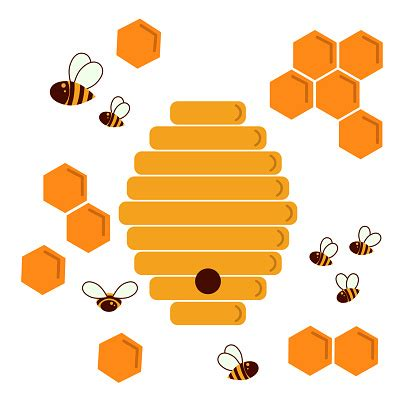

Military - Cultures run with strict hierarchies and devoted to the arts of aggression. Low creativity, but highly productive with available means.
Religious - Run by dogma, realistic or not, and strictly enforced. Very low productivity of Tritanium-44 but productive of strong Woo capabilities and resources and enables fast recovery from disasters.
 Hive - Hive cultures are superbly organized, and every individual knows his purpose, place and expendability without question. Low creativity and evolution, but superbly productive with available means.
Selfless - Composed of mostly individuals who put the quality of the collective above their personal needs. These races have a moderate rate of development and are very good at survival with disaster recoveries being fast and cheap.
Cooperative - Cultures where individuals are cooperative but not to the exclusion of their personal interests. Very creative and fast developing with a very good rate of production.
Adventurous - Composed of intrepid individuals who care more for fresh experiences than concern for their own survival. Superbly creative but even better at finding new resources and only moderately productive.
Practical - Civilizations that place effective and practical concerns above idealism. The most productive of all cultures, not hindered by dogma or idealogy.
Egalitarian - Individual rights and freedom are supported and these cultures are largely accepting of the new, diverse and unusual providing that individual rights are preserved. The most creative of all the cultures, fast development but prone to fragmentation, civil war and slow recovery from disasters.